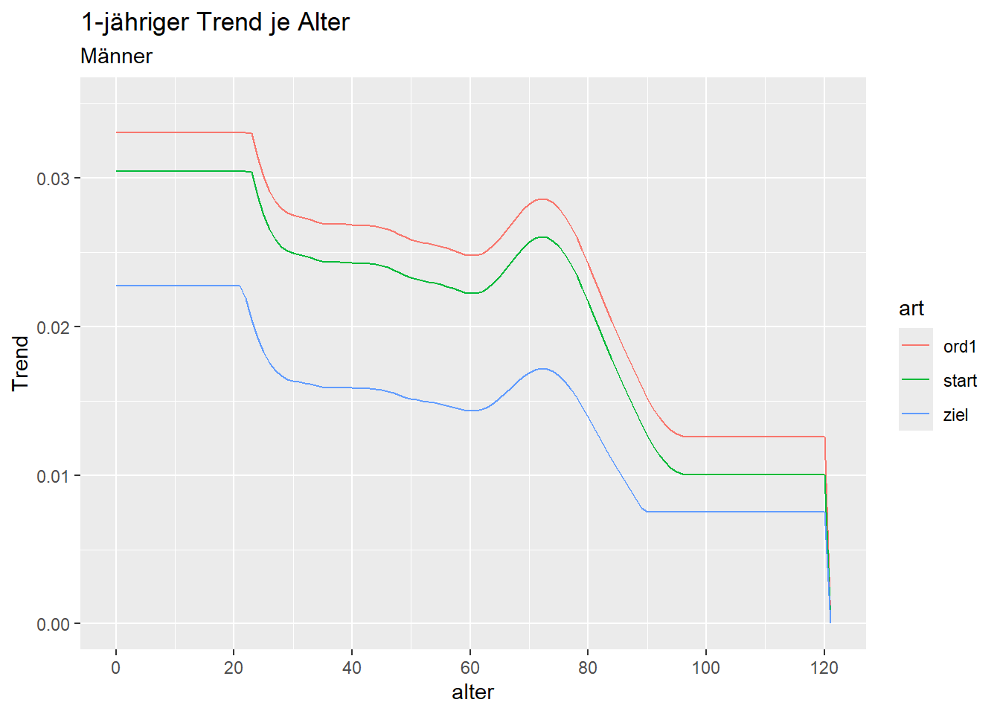
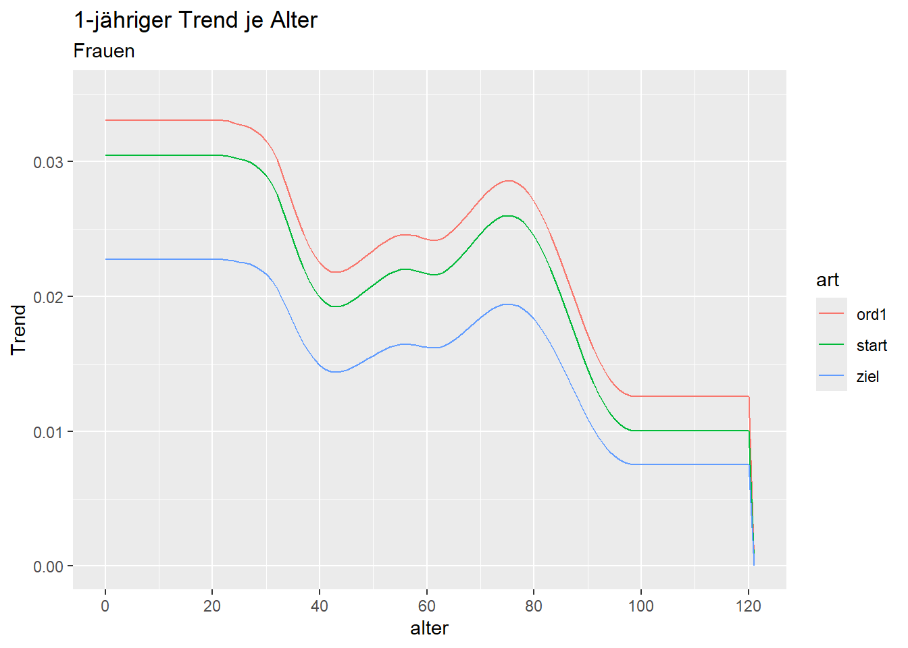
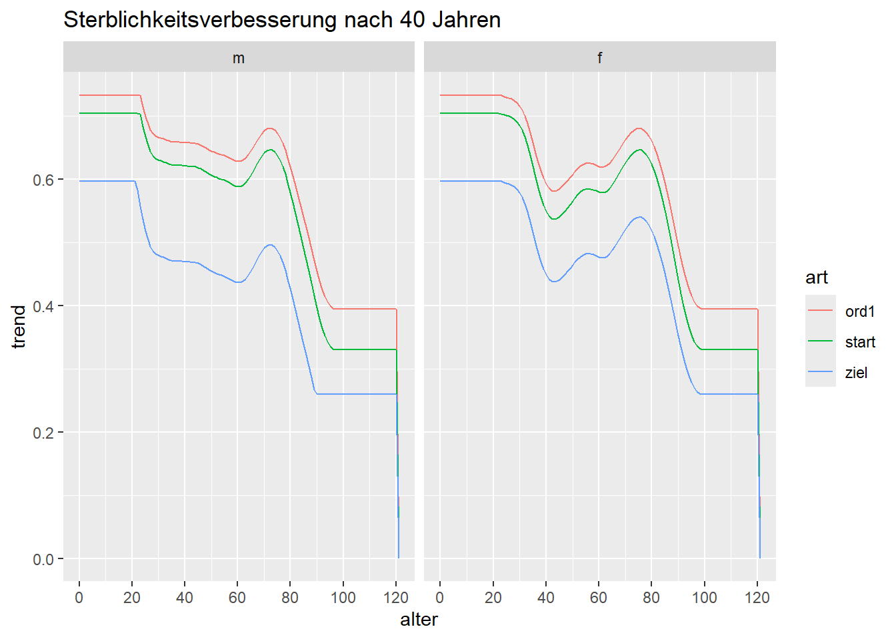

3 Trendbetrachtung
3.1 Trends der Tafeln 2. und 1. Ordnung
Es gibt 3 Trends nach DAV 2004 R:
| Trend | Entspricht | Umsetzung |
|---|---|---|
| Starttrend 2. Ord | Kurzfristtrend für Versicherte | Es wird auf den glatteren Mittelfristtrend bzw. dessen Glättung (geglätteter Mittelfristtrend) zurückgegriffen.
|
| Zieltrend 2. Ord | 75% des Mittelfristtrends für Versicherte | Entspricht 75% des geglätteten Mittelfristtrends inkl. Anpassung um Versichertenzuschlag und Extrapolation der Randalter
|
| Trend 1. Ord | Kurzfristtrend für Versicherte erhöht um Sicherheiten | Starttrend 2. Ord erhöht um
|
geglätteter Mittelfristtrend: sei \(F(x)\) der rohe Mittelfristtrend zum Alter \(x\) für die Alter 0-89. Zu Gewicht \(1\) je Alter, Glättemaß 0,25 und s=3 wird per Whittaker-Henderson der geglättete Mittelfristtrend bestimmt.
Versichertenzuschlag: 0,2% jährliche Sterblichkeitsverbesserung
3.2 Trend je Alter
Hinweis: der Trend entspricht in etwa der Sterblichkeitsverbesserung (siehe Section 3.4.1)

3.3 Sterblichkeitsverbesserung nach n Jahren

3.4 Anhang
3.4.1 Zusammenhang Trend und Sterblichkeitsverbesserung
Bei gegebener Trendfunktion \(F_t(x)\) kann man aus der Sterbewahrscheinlichkeit des Jahres \(t\) die Sterbewahrscheinlichkeit des Jahres \(t+1\) errechnen.
\[q_{x, t+1} := q_{x, t} \cdot e^{-F_t(x)}\] Im Fall ohne Trenddämpfung gilt \(F_t(x) = F(x)\), dass also ein vom Jahr unabhängiger Wert vorliegt. Für jedes Jahr verringert sich somit die Sterbewahrscheinlichkeit um den gleichen Anteil. Dabei entspricht die Sterblichkeitsverbesserung näherungsweise dem Trend selbst:
Code
tibble(trend = c(0.035, 0.03, 0.025, 0.02, 0.01, 0.0075),
eexp = exp(-trend),
sterblichkeitsverbesserung = 1-eexp,
anteil_trend = sterblichkeitsverbesserung/trend) |>
gt::gt() |>
gt::opt_table_font(size = 11) |>
gt::fmt_number(1, decimals = 3, ) |>
gt::fmt_number(2:3, decimals = 6) |>
gt::fmt_percent(4, decimals = 0) |>
gt::cols_label(
trend = md("$F(x)$"),
eexp = md("$exp^{-F(x)}$"),
)| \(F(x)\) | \(exp^{-F(x)}\) | sterblichkeitsverbesserung | anteil_trend |
|---|---|---|---|
| 0,035 | 0,965605 | 0,034395 | 98% |
| 0,030 | 0,970446 | 0,029554 | 99% |
| 0,025 | 0,975310 | 0,024690 | 99% |
| 0,020 | 0,980199 | 0,019801 | 99% |
| 0,010 | 0,990050 | 0,009950 | 100% |
| 0,007 | 0,992528 | 0,007472 | 100% |